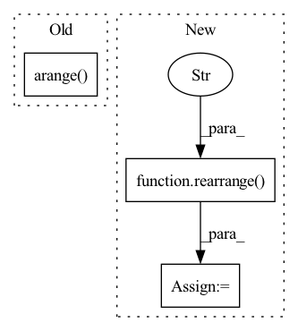

Pattern ID :2512
Before Change
// add relative positional embedding
seq_index = default(seq_index, torch.arange( n, device = device) )
seq_rel_dist = rearrange(seq_index, "i -> () i ()") - rearrange(seq_index, "j -> () () j")
seq_rel_dist = seq_rel_dist.clamp(-self.max_rel_dist, self.max_rel_dist) + self.max_rel_dist
rel_pos_emb = self.pos_emb(seq_rel_dist)After Change
// template pos emb
x_point = rearrange( x, "b i j d -> (b i j) () d" )
t_point = rearrange(t, "b t i j d -> (b i j) t d")
x_mask_point = rearrange(x_mask, "b i j -> (b i j) ()")
t_mask_point = rearrange(t_mask_crossed, "b t i j -> (b i j) t")
template_pooled = self.template_pointwise_attn(
x_point,
context = t_point,
mask = x_mask_point,
context_mask = t_mask_point
)
template_pooled_mask = rearrange(t_mask_point.sum(dim = -1) > 0, "b -> b () ()")
template_pooled = template_pooled * template_pooled_mask
template_pooled = rearrange(template_pooled, "(b i j) () d -> b i j d", i = n, j = n)
x = x + template_pooled
// embed extra msa, if present
In pattern: SUPERPATTERN
Frequency: 3
Non-data size: 3
Instances Fragment ID: 8245725
Project Name: lucidrains/alphafold2
Commit Name: 79d820847ae54855cebe2e5717ca9214564f1ed9
Time: 2021-07-20
Author: lucidrains@gmail.com
File Name: alphafold2_pytorch/alphafold2.py
M Class Name: Alphafold2
N Class Name: Alphafold2
M Method Name: forward(16)
N Method Name: forward(16)
M Parent Class: nn.Module
N Parent Class: nn.Module
M File Name: alphafold2_pytorch/alphafold2.py
N File Name: alphafold2_pytorch/alphafold2.py
M Start Line: 607
M End Line: 652
N Start Line: 630
N End Line: 677
Before Change
sim = einsum("b i d, b j d -> b i j", q, k)
if self.causal:
sim = sim / rearrange(torch.arange( seq_len, device = device) + 1, "... -> ... 1")
else:
sim = sim / seq_len
After Change
attn = self.dropout(attn)
if exists(mask):
mask = rearrange( mask, "b j -> b 1 j" )
attn = attn.masked_fill(~mask, 0.)
if self.causal:
causal_mask = torch.ones((seq_len, seq_len), dtype = torch.bool, device = device).triu(1) Fragment ID: 8245724
Project Name: lucidrains/flash-pytorch
Commit Name: 6b0cc2e2316bf9c93b8b48916a11f774209d7bf1
Time: 2022-03-28
Author: lucidrains@gmail.com
File Name: flash_pytorch/flash_pytorch.py
M Class Name: GAU
N Class Name: GAU
M Method Name: forward(4)
N Method Name: forward(3)
M Parent Class: nn.Module
N Parent Class: nn.Module
M File Name: flash_pytorch/flash_pytorch.py
N File Name: flash_pytorch/flash_pytorch.py
M Start Line: 171
M End Line: 178
N Start Line: 162
N End Line: 184
Before Change
// add dynamic positional bias
i_pos = torch.arange(wsz, device = device)
j_pos = torch.arange( wsz, device = device)
grid = torch.stack(torch.meshgrid(i_pos, j_pos))
grid = rearrange(grid, "c i j -> (i j) c")
rel_ij = grid[:, None] - grid[None, :]
rel_pos_bias = self.dpb(rel_ij.float())After Change
pos = torch.arange(-wsz, wsz + 1, device = device)
rel_pos = torch.stack(torch.meshgrid(pos, pos))
rel_pos = rearrange( rel_pos, "c i j -> (i j) c" )
biases = self.dpb(rel_pos.float())
rel_pos_bias = biases[self.rel_pos_indices]
sim = sim + rel_pos_bias Fragment ID: 8245715
Project Name: lucidrains/vit-pytorch
Commit Name: b69b5af34f7759948425113f6dc3b30dfb91d4d1
Time: 2021-11-22
Author: lucidrains@gmail.com
File Name: vit_pytorch/crossformer.py
M Class Name: Attention
N Class Name: Attention
M Method Name: forward(2)
N Method Name: forward(2)
M Parent Class: nn.Module
N Parent Class: nn.Module
M File Name: vit_pytorch/crossformer.py
N File Name: vit_pytorch/crossformer.py
M Start Line: 139
M End Line: 144
N Start Line: 152
N End Line: 156